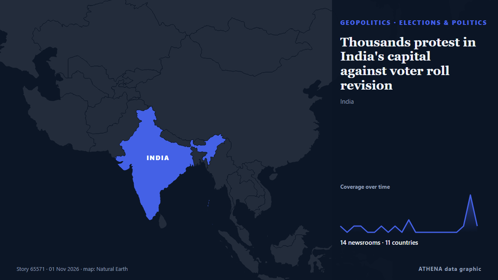

Геополитика, политика и безопасность
Заголовки приводятся на английском языке, как они были опубликованы.

Выборы и политикаThousands protest in India's capital against voter roll revision
NEW DELHI: Thousands joined a protest led by opposition politicians in India’s capital on Sunday, renewing demands for the country’s election chief to resign over an overhaul of voter lists they say… из New Straits Times
| 19 окт. | 191 |
|---|---|
| 20 окт. | 86 |
| 21 окт. | 165 |
| 22 окт. | 271 |
| 23 окт. | 251 |
| 24 окт. | 175 |
| 25 окт. | 179 |
| 26 окт. | 316 |
| 27 окт. | 274 |
| 28 окт. | 232 |
| 29 окт. | 243 |
| 30 окт. | 268 |
| 31 окт. | 121 |
| 1 нояб. | 72 |
UK PM Open to Slavery Apology but Rules Out Financial Reparations
British Prime Minister Andy Burnham has said he is open to a formal apology for Britain’s role in the transatlantic slave trade but has rejected financial reparations ahead of a Commonwealth summit… из Khaama Press
US Embassy in Russia warns citizens in Moscow of potential 'mass casualty event' near museum
"The US Embassy in Moscow is aware of a credible threat of a mass casualty event TODAY, October 31, at the Tsaritsyno Museum Reserve in Moscow," the embassy wrote. из The Jerusalem Post
Israeli strikes in Gaza kill 8, including a child
Five people were killed in Khan Yunis and three in Gaza City, according to Gaza's civil defence service. из Free Malaysia Today
Indian authorities tighten security ahead of big opposition march in Delhi
Protesters are set to demand the resignation of India's election chief over a controversial revision of voter lists. из CNA (Channel NewsAsia)
Iran warns US, Israel against new attacks after Trump, Netanyahu threats
TEHERAN: Iran’s supreme leader warned the United States and Israel Saturday of fresh attacks following their threats to resume strikes after crucial elections, as fears increased over a return to… из New Straits Times
Ukraine claims strike on major Russian oil refinery near Moscow
Russia reports significant damage to an industrial facility in the Nizhny Novgorod region after a massive overnight drone attack, as Kiev claims it targeted the Kstovo oil refinery. из TRT World
Trump says Flavio Bolsonaro can stay in US 'as long as he wants'
The former conservative presidential candidate left Brazil after losing the election to leftist incumbent Luiz Inacio Lula da Silva. из Free Malaysia Today
Trump Warns Iran: '10 Minutes' to Strike
US president signals possible attacks on remaining nuclear sites despite ongoing diplomatic efforts. из News of Bahrain
Home heating costs threaten to chill GOP vote in key Senate races
Democrats running for Senate in Maine, Alaska and New Hampshire are zeroing in on the rising cost of home heating as winter — and Election Day — quickly approach. из The Hill
G20 FM meeting ends without joint communique amid deep divisions
Foreign ministers from the Group of 20 leading economies are gathering in Atlanta on October 30-31 for talks expected to expose continuing divisions among Western governments over Russia's war in… из RFE/RL (English)
Pope Leo makes history by voting in US midterms
Rome — Pope Leo XIV has submitted a mail-in ballot for the US midterms, becoming the first pope to vote in a US election and likely the first to vote in a secular democratic election. из Egypt Independent
Evacuees from Russian-occupied Oleshky reunited with relatives in Ukraine
Russia and Ukraine have not specified how many people chose to leave the city. из The Irish News (Belfast)
Turkic states target 2027 launch for joint satellite from Kazakhstan
Russia also intends to assist Tanzania in establishing a national space agency. из TASS (English)
Erdogan, Zelensky talk Black Sea Grain Corridor
Turkish President Recep Tayyip Erdogan and Ukrainian President Volodymyr Zelensky agreed on Saturday to continue work on the Black Sea Grain Corridor, aimed at enabling grain shipments from Ukraine. из AzerNews
Rubio says US yet to decide on new Iran strikes
ATLANTA: US President Donald Trump has not made a decision about fresh strikes on Iran amid stalled peace talks, US Secretary of State Marco Rubio said Saturday. из Business Recorder
Russian foreign minister Lavrov arrives in US for G20 meeting
Russian Foreign Minister Sergey Lavrov has arrived in the US to attend a G20 meeting in Atlanta amid global tensions on various issues. из Arab News
US approves sale of 500 Patriot missiles to Ukraine
The American-made interceptors are the only effective weapon for downing Russia's ballistic missiles. из BBC News
Trump says conflict with Iran will 'end very soon'
President Trump expressed optimism that the conflict with Iran would end soon, though he didn’t provide specific details on how this would occur. из Arab News
Flavio Bolsonaro Claims Political Persecution After Leaving Brazil
Bolsonaro disembarks plane after landing in Florida: AFP. из Gulf News
Aid operation and evacuations in Oleshky amid brief truce agreed to by Russia and Ukraine
A humanitarian mission entered the devastated city of Oleshky on Friday, officials said, as Russia and Ukraine observed the most significant truce of the 4½-year war that began with Moscow's… из PBS NewsHour World
Nations commit to get nature goals back on track
Nearly 200 nations struck hard-fought agreements Friday at a U.N. biodiversity summit, but the outcome was accompanied by disappointment over missed opportunities to address humanity's destructive… из Phys.org
Qatari Mediators Return to Tehran in Push for US-Iran Peace Deal
Qatari mediators returned to Tehran on Friday to advance efforts for a US-Iran agreement, but disagreements over nuclear negotiations, oil sanctions and a US port blockade continue to obstruct a… из Khaama Press
3 Killed as Ukraine Renews Drone Strikes Against Oil Refineries
Deputy Prime Minister Alexander Novak confirmed that Ukrainian drones targeted three oil refineries and one gas chemical complex overnight. из The Moscow Times
Starved residents of Russian-occupied Oleshky return to Ukraine during a rare local ceasefire
The six-day ceasefire was reached after mediation efforts by US first lady Melania Trump and with the pope’s help. из The Straits Times
US attacks 2 Iranian fishing boats off Masan, Qeshm Island
Iranian state broadcaster IRIB, citing a Hormozgan province official, said on Saturday that the US attacked two fishing boats near Qeshm Island, leaving two fishermen missing and one wounded. из Business Recorder
Oil jumps 2%, settles at 6-month highs on fears of escalation in Iran
Oil prices jumped more than 2 percent on Friday and settled at their highest levels since the end of April, as traders braced for a potential escalation in the Iran war after the U.S. midterm… из The Korea Times
Saudi-led coalition says it intercepted Houthi drone near Riyadh
Riyadh: Saudi forces on Tuesday intercepted a ballistic missile aimed at the kingdom's capital, said a spokesman for the Riyadh-led coalition backing Yemen's government, after auth... из Oman Observer
US Costs of Iran War Rise to Over $47 Billion, According to Pentagon Estimate
More than $6 billion would be needed to replace military equipment and 'platform losses' из Express Tribune
CONTSHIP JET Container Ship Sinks After Drone Attack in Black Sea
The CONTSHIP JET sank after being struck by three drones off Bulgaria; 18 crew rescued, and 20 containers fell into the sea. из SeaNews Türkiye
Pope Leo becomes first pontiff to cast ballot in US election
WASHINGTON, Oct 30 - Pope Leo XIV cast a ballot by mail in the US midterm elections, the Vatican press office said on Friday, a historic first for the American-born pontiff. из The Straits Times
Trump reverses decision to cancel Kansas and Iowa rallies before midterms
The president cancelled the events in favor of tele-rallies, as Republicans face a fight to retain control of Congress Donald Trump cancelled, and then promptly uncancelled, two in-person rallies in… из The Guardian
What Maria Corina Machado’s return to Venezuela means for its democratic transition
CARACAS, Oct 23 - The Venezuelan opposition movement headed by Nobel Peace Prize laureate Maria Corina Machado is preparing for eventual elections, including a new effort to boost voter registration… из The Straits Times
Pentagon tells Europeans to cool their rhetoric on Russia, sources say
US message reflect debate within NATO to publicly address threat of increasingly assertive Russia. из Express Tribune
Evacuations begin in Ukraine under localized ceasefire brokered by Melania Trump
Residents of the Russian-occupied Ukrainian town have reported a worsening food crisis since 2022. из Express Tribune